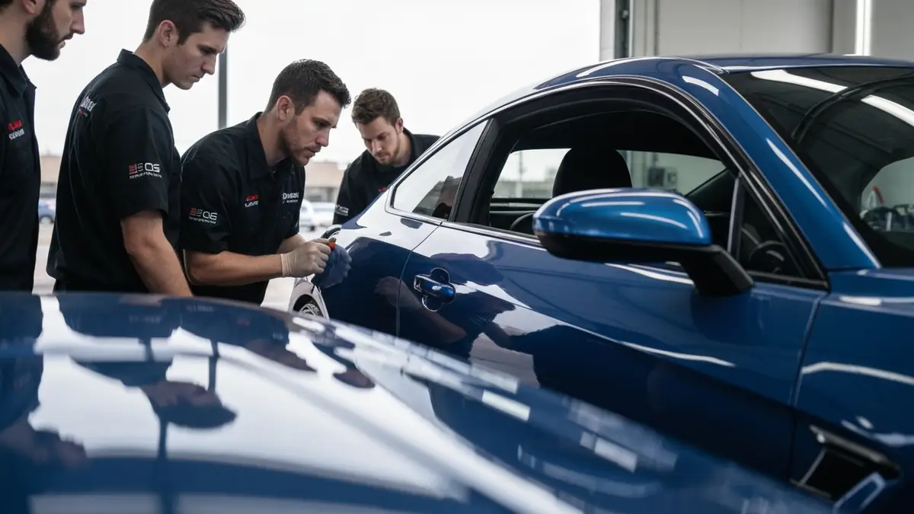

Auto Detailing in Cleveland, Tennessee
Mobile Car Detailing in Cleveland, TN
Cleveland, TN, nestled 30 miles east of Chattanooga in Bradley County, presents unique challenges for vehicle cleanliness that mobile detailing is perfectly poised to address. Situated firmly in 'Tornado Alley,' residents frequently contend with vehicles caked in post-storm mud, leaves, and construction debris, making routine car washes insufficient. Beyond storm aftermath, the area's blend of suburban subdivisions, like Hopewell and Black Fox, and more rural fringes means vehicles frequently encounter red clay, agricultural dust, and pollen. Busy commutes on I-75, coupled with an active outdoor lifestyle involving trips to Red Clay State Park or the Hiwassee River, leave cars accumulating dirt and grime quickly. Our mobile service saves Cleveland families and businesses the valuable time lost battling these persistent local elements, bringing pristine results directly to their driveway.

Why Cleveland, TN Residents Choose Scenic City Detailing
Scenic City Detailing isn't just *near* Cleveland; we understand its heartbeat. Our technicians are intimately familiar with Bradley County's specific conditions, from the tenacious red clay that clings to vehicles after a rain shower to the unique pollen and debris patterns following local storms. We know the routes, the communities, and the pride Cleveland residents take in their property. This local knowledge ensures we anticipate and effectively tackle the challenges your vehicle faces, delivering a level of care only a truly local expert can provide. Our reputation in the greater Chattanooga area, extending to Cleveland, is built on this foundation of specific, tailored service.
For Cleveland, TN homeowners and businesses, our mobile service offers unparalleled convenience. Imagine reclaiming hours spent driving to a car wash or battling post-storm vehicle grime yourself. Whether you're a busy parent juggling school pickups from Lee University, a professional commuting on Paul Huff Parkway, or a business maintaining a fleet, we bring the premium detail shop experience directly to you. This means less downtime, zero travel, and more time for what matters most in your Cleveland day – all while ensuring your vehicle looks its best, protected against the elements unique to our beloved city.
Our Mobile Car Detailing Services in Cleveland, TN
- Exterior Decontamination Wash: Essential for Cleveland vehicles, tackling tenacious red clay, road salt residue from occasional winter weather, and post-storm mud that accumulates from driving on local roads or unpaved driveways throughout Bradley County. We specifically target the environmental grime prevalent in our humid, tree-lined environment.
- Interior Deep Clean: Perfect for Cleveland families whose vehicles endure everything from pet hair after a trip to Tinsley Park to the inevitable dirt and debris tracked in from backyard adventures or active kids attending Cleveland City Schools. We meticulously remove local dust, pollen, and everyday spills, restoring a fresh cabin experience.
- Paint Protection (Wax/Sealant): Crucial for shielding Cleveland vehicles from the intense Tennessee sun, tree sap from abundant local foliage, and acidic fallout after severe weather events common in our "Tornado Alley" region. This protection helps maintain your car's finish against the specific wear and tear of our climate.
- Headlight Restoration: A vital service for Cleveland drivers, ensuring maximum visibility on dimly lit rural roads leading to areas like Ocoee, or during early morning commutes on US-64 and I-75. Our restoration combats the yellowing caused by pervasive UV exposure and humidity, enhancing both safety and vehicle aesthetics.
Serving Cleveland, TN and Surrounding Areas
Scenic City Detailing proudly serves all of Cleveland, TN, extending our premium mobile detailing services across Bradley County. As Cleveland continues to grow, attracting new residents and businesses, we cover everything from the bustling areas around Lee University and Bradley Square Mall to the quieter, established neighborhoods of Hopewell, Black Fox, and Wildwood. Our mobile team navigates easily through key arteries like I-75, US-64, US-11, and the APD-40 loop (Paul Huff Parkway), ensuring we reach clients near Cleveland State Community College or those residing closer to the scenic outskirts towards the Ocoee River region. No matter your Cleveland address, from Downtown to the far reaches of our community, we bring unparalleled convenience and quality directly to you.
Frequently Asked Questions About Mobile Car Detailing in Cleveland, TN
How much does mobile car detailing cost in Cleveland, TN?
The cost of mobile car detailing in Cleveland, TN, varies based on your vehicle's size and desired service package. Given Cleveland's mix of family-sized SUVs and commuter sedans, our competitive pricing reflects both vehicle type and condition, ensuring value for money. We offer tiered packages from basic washes to comprehensive detailing, with options perfectly suited for protecting your vehicle against Cleveland's unique environmental challenges, from red clay to storm debris.
How long does mobile car detailing take for a typical Cleveland, TN home?
For a typical Cleveland, TN vehicle, a standard mobile car detailing service usually takes between 1.5 to 3 hours, depending on the chosen package and the vehicle's current condition. A compact sedan might be quicker, while larger SUVs or trucks, often prevalent in Cleveland for families and outdoor activities, might require slightly more time, especially if dealing with accumulated red clay or pet hair common to our area.
Do you serve all of Cleveland, TN?
Absolutely, Scenic City Detailing proudly serves the entirety of Cleveland, TN, and its immediate surrounding areas within Bradley County. Whether you reside in the vibrant communities near Lee University, the family-friendly neighborhoods of Hopewell and Black Fox, or closer to the industrial parks along APD-40, our mobile team comes directly to your location. We ensure comprehensive coverage, making premium car care accessible to every Cleveland resident and business.
How do you specifically address Cleveland, TN's notorious red clay and post-storm mud?
Cleveland's red clay and post-storm debris are major challenges, but our team specializes in tackling them. We utilize specific pre-soak treatments and gentle, yet effective, cleaning techniques to safely lift and remove tenacious red clay stains, mud, and organic debris without scratching your paintwork. Our detailing methods are specifically adapted for Cleveland's environment, ensuring your vehicle is meticulously cleaned and protected against these persistent local elements, restoring its pristine condition after any local downpour or adventure.
Ready to schedule your mobile car detailing service in Cleveland, TN? Call us today or use the contact form above — we serve Cleveland, TN and all surrounding areas of Chattanooga, TN. Most Cleveland, TN jobs are scheduled within 48-72 hours.
Get Your Free Auto Detailing Quote in Cleveland
Call or text today. Most vehicles scheduled within the week.